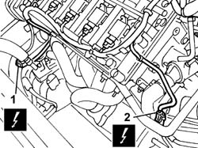
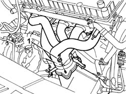
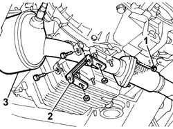
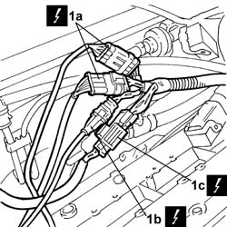
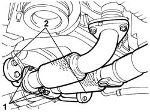
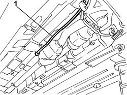
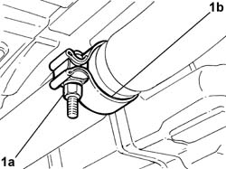
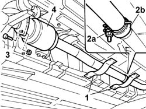

1080B62 CATALYTIC CONVERTER - R.R.
- Path
- Procedures > 10 ENGINE > 1080 EMISSION CONTROL SYSTEM > 1080B EXHAUST EMISSION CONTROL SYSTEM > 1080B62 CATALYTIC CONVERTER - R.R.
- Kind
- repair procedure (removal / refitting; the operation number is the code)
- Applies to
- engines: 2.0 TB, 2.4 20V, 3.0 V6, 3.2 V6; all production periods
- Interactive page
- https://sloeber94.github.io/elrnDB-lThss/en/#/75177
Applies to: engines: 2.4 20V; all production periods
 Removing
Removing
 Refitting
Refitting- Position the vehicle on a lift.
- Disconnect the negative battery lead.
See in Op. 7040D50 ENGINE COMPARTMENT UPPER SOUND INSULATION SHIELD - R.R.
See in Op. 1048A28 vacuum air circuit resonator pipe - r+r
See in Op. 1048A21 AIR INLET HOSE FROM INTAKE TO FILTER - R.R.
See in Op. 1048A23 Cold AIR INTAKE for air filter - R.R.
See in Op. 1016A40 Ignition COIL COVER on cylinder head - R.R.
- Raise the vehicle.
See in Op. 7055B54 PROTECTION/GUARD under engine - R.R.
See in Op. 1072C44 Exhaust manifold heat shield on BULKHEAD - R.R.
1. Disconnect the electrical connection for the front Lambda sensor.
 | Description | Connector |
|---|---|---|
1 | Lambda sensor on catalyzer | K017 |
2. Disconnect the electrical connection for the rear Lambda sensor.
| Description | Connector |
|---|---|---|
2 | Lambda sensor on catalyzer 2 | K018 |

Applies to: engines: 2.4 20V; all production periods
1. Undo the nuts (1a) fixing the catalytic converter to the exhaust manifold (1b).

Applies to: engines: 2.4 20V; all production periods
- Raise the vehicle on the lift.
1. Undo the nuts fixing the catalytic converter to the centre section of the exhaust pipe.
2. Remove the catalytic converter mounting bracket.
3. Remove the catalytic converter complete with Lambda sensors.

Applies to: engines: 2.4 20V; all production periods
Refitting
Removing- Position the catalytic converter.
- Position the gasekt and tighten the nuts fixing the catalytic converter to the centre section of the exhaust pipe.
 | Value - daNm | Fastening | Component | Ø |
|---|---|---|---|---|
. | (to cable centre section) 2.8 | Nut | CATALYTIC CONVERTER (ONE) | M8 |
- Fit the catalytic converter mounting bracket.
| Value - daNm | Fastening | Component | Ø |
|---|---|---|---|---|
. | (on engine oil sump) 4 | Nut | CATALYTIC CONVERTER MOUNT | M10 X 1.25 |
| Value - daNm | Fastening | Component | Ø |
|---|---|---|---|---|
. | (to catalytic converter) 2.8 | Bolt | CATALYTIC CONVERTER MOUNT | M8 |
- Lower the vehicle on the lift.
- Tighten the nuts fixing the catalytic converter to the exhaust manifold.
| Value - daNm | Fastening | Component | Ø |
|---|---|---|---|---|
. | 2.8 | Nut | CATALYTIC CONVERTER (ONE) | M8 |
- Connect the electrical connection for the rear Lambda sensor.
| Description | Connector |
|---|---|---|
. | Lambda sensor on catalyzer 2 | K018 |
- Connect the electrical connection for the front Lambda sensor.
| Description | Connector |
|---|---|---|
. | Lambda sensor on catalyzer | K017 |
See in Op. 1072C44 Exhaust manifold heat shield on BULKHEAD - R.R.
See in Op. 1016A40 Ignition COIL COVER on cylinder head - R.R.
See in Op. 1048A23 Cold AIR INTAKE for air filter - R.R.
See in Op. 1048A21 AIR INLET HOSE FROM INTAKE TO FILTER - R.R.
See in Op. 1048A28 vacuum air circuit resonator pipe - r+r
- Raise the vehicle on the lift.
See in Op. 7055A54 NO. PLATE HOLDER - R.R.
See in Op. 7040D50 ENGINE COMPARTMENT UPPER SOUND INSULATION SHIELD - R.R.
- Connect the negative battery lead.
- Remove the vehicle from the lift.
Applies to: engines: 3.0 V6, 3.2 V6; all production periods
Removing
Refitting- Position the vehicle on a lift.
- Open the boot, remove the cover on the left hand side and disconnect the negative battery lead.
1. Remove the container located behind the air chamber and disconnect the two connectors (1a) for the rear Lambda sensors, the connector (1b) for the timing side detonation sensor and the coupling (1c) between the engine system cable and the vehicle wiring.
| Description | Connector |
|---|---|---|
1a | Lambda sensor on catalyzer | K017 |
| Description | Connector |
|---|---|---|
1c | Air conditioning-heater front coupling | D008A |
| Description | Connector |
|---|---|---|
1b | Detonation sensor - 2 | K050 |
| Description | Connector |
|---|---|---|
1a | Lambda sensor on catalyzer 2 | K018 |
| Description | Connector |
|---|---|---|
. | Air conditioning-heater front coupling | D008B |
| Description | Connector |
|---|---|---|
. | Air conditioning-heater front coupling | D008C |

Applies to: engines: 3.0 V6, 3.2 V6; all production periods
- Secure the connections for the Lambda sensor using string to facilitate refitting later on.
- Raise the vehicle on the lift.
1. Undo the nuts fixing the pipes between the catalytic preconverters and the exhaust pipes.
2. Release the front rubber support seals.

Applies to: engines: 3.0 V6, 3.2 V6; all production periods
1. Remove the wiring for the Lambda sensors for the two catalytic converters from the engine compartment and release them from the fastenings on the heat shields.

Applies to: engines: 3.0 V6, 3.2 V6; all production periods
1. Undo the nut (1a) for the converter rear mounting bracket (1b).
- Remove the catalytic converter complete with Lambda sensors.

Applies to: engines: 3.0 V6, 3.2 V6; all production periods
Refitting
Removing- Position the converter securing the front rubber support seals after having secured the wiring for the Lambda sensors to the string and having fastened them to the special retainers on the heat shield.
- Tighten the rear converter fastening.
| Value - daNm | Fastening | Component | Ø |
|---|---|---|---|---|
. | 4,5 | Nut | REAR CATALYTIC CONVERTER(S) SEAL | M10 X 1.25 |
- Lower the vehicle and save the Lambda sensor wiring.
- Connect the connections and close the connector box cover.
- Connect the negative battery terminal and position the cover on the left hand side of the luggage compartment.
- Remove the vehicle from the lift.
Applies to: engines: 2.0 TB; all production periods
Removing
Refitting- Position the vehicle on a lift.
1. Undo the fixing bolts and remove the protective brackets fastened to the underbody.
2. Undo the bolt (2a) fixing the metal collar (2b) connected to the rear silencers.
3. Undo the bolts fixing the catalytic converter to the centre section of the exhaust pipe and keep the gasket.
4. Release and remove the catalytic converter.

Applies to: engines: 2.0 TB; all production periods
Refitting
Removing- Join the rear silencers to the exhaust pipe using the metal band.
- Tighten the bolt fixing the metal collar.
| Value - daNm | Fastening | Component | Ø |
|---|---|---|---|---|
. | 4.5 | - | REAR SILENCER EXHAUST | M10X1.25 |
- Position the gasket.
- Tighten the bolts fixing the catalytic converter to the centre section of the exhaust pipe.
| Value - daNm | Fastening | Component | Ø |
|---|---|---|---|---|
. | 2,8 | Bolt | CATALYTIC CONVERTER (ONE) | M8 |
- Position the brackets and tighten the fixing bolts.
- Remove the vehicle from the lift.
Topics linked from this page (8)
- 1016A40 Ignition COIL COVER on cylinder head - R.R.
- 1048A21 AIR INLET HOSE FROM INTAKE TO FILTER - R.R.
- 1048A23 Cold AIR INTAKE for air filter - R.R.
- 1048A28 vacuum air circuit resonator pipe - r+r
- 1072C44 Exhaust manifold heat shield on BULKHEAD - R.R.
- 7040D50 ENGINE COMPARTMENT UPPER SOUND INSULATION SHIELD - R.R.
- 7055A54 NUMBERPLATE HOLDER - R+R
- 7055B54 PROTECTION/GUARD under engine - R.R.
Topics that link to this page (7)
- 1076A40 Exhaust pipe HEAT SHIELDS - R.R.
- 1076A48 Catalytic converter HEAT SHIELD - R.R.
- 2125C22 GEAR control LEVER and SUPPORT - R.R.
- 2125C30 GEAR ENGAGEMENT FLEXIBLE RODS
- 2135A10 Automatic transmission control LEVER AND SUPPORT - R.R. and overhaul
- 2135A12 Gear engagement CABLE - R.R.
- 3340B62 RIGID PIPE (one), left or right, from hydraulic control unit to rear brakes - R.R.